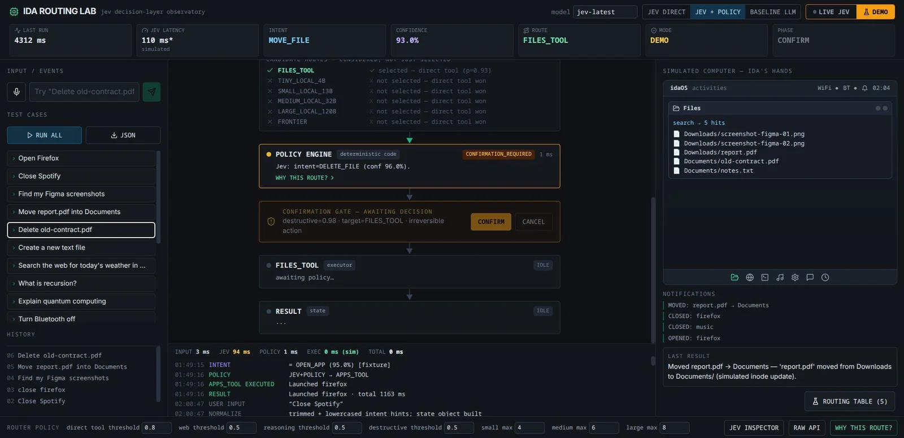

体験
意味の判定（Jev）と、実行してよいかの権限（コード上のポリシー）を、別の段として並べている。破壊的な操作は、Jevが高い確率で意図を言い当てても、人の確認まで実行が止まる。
- 各段に所要時間が付く（INPUT 3ms、JEV 94ms、POLICY 1ms、EXEC 0ms sim）。
- ルーターの閾値（direct tool、web、reasoning、destructive など）が下部で調整でき、ポリシーの設計が画面から見える。
- 「WHY THIS ROUTE?」のリンクや Jev Inspector、Raw APIで、判断の理由に戻れる。
- 確認ゲートは、選んだ操作の対象と不可逆性を、その場で文にして見せている。
キャプチャ
{kind=link}

（原寸の画像を開く）見る箇所中央の縦のパイプライン（候補ルート → POLICY ENGINE → CONFIRMATION GATE → 実行 → RESULT）と、右側のシミュレートされたファイル一覧・通知
入力から画面の変化まで
-
判断への入力
自然文のコマンド。テストケースの一覧から「Delete old-contract.pdf」が選ばれている。音声とテキストの入力欄もある。
-
Jevの判断
意図（DELETE_FILE、confidence 96.0%）を判定し、ルート候補から FILES_TOOL（p=0.93）を選ぶ。小型ローカルモデルからフロンティアモデルまでの候補は「direct tool won」で選ばれない。
-
結果がUIをどう変えるか
POLICY ENGINE（決定的なコード）が CONFIRMATION_REQUIRED を出し、CONFIRMATION GATE が「destructive=0.98・irreversible action」と示して CONFIRM / CANCEL を待つ。実行と結果は待機中。右側にシミュレートされたファイル一覧と通知が出る。
- 判断型の見立て
- Choice推定
- 意図の判定とルート候補からの選択という構成からの見立て。destructive 0.98 などの値の質問型は画面に明記されていない。
Jevとの適合
意図の分類とルート選択にJevを使い、危険な操作の許可は決定的なコードに任せる分担は、Jevの用途に合う。ただしこの画面はシミュレーションで、CONFIRMを押した後の状態やCANCEL時の復帰は確認できない。
確認範囲と未確認事項
作者の投稿画像1枚から確認。画面は「MODE: DEMO」で、シミュレートされたコンピュータとfixtureを使う。Jevの遅延表示にも「simulated」の注記があり、実機の操作は行われない。
- 確認済み投稿画像に見えるパイプライン、判定値、確認ゲートの文言、閾値の欄、DEMOの表示
- 未検証CONFIRM後の動作、実機のファイル操作、判定の精度、「simulated」の範囲、ルーティング表の内容
- 推定扱いdestructive 0.98の質問型と算出元
- 引用X投稿は2026-09-20（UTC）。投稿に添付された画像1枚を引用。権利は作者に帰属する